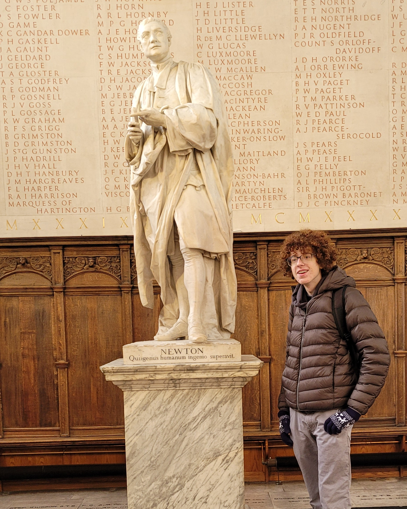
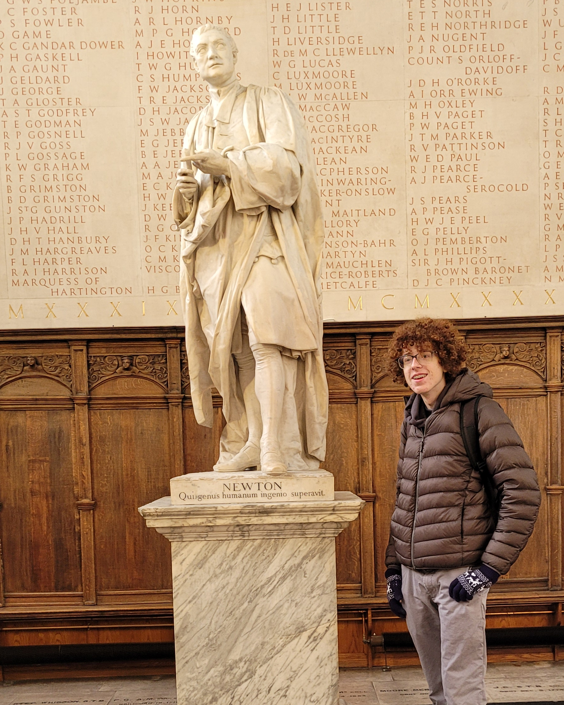

Hi! I'm Kai Smolin, a grade 12 student at WTCS, and thats a picture of me with the statue of Issac Newton in the cathedral of Trinity College, Cambridge, exactly where Newton himself would have studied.
I do all sorts of things, but the headliners include leading the School Newspaper here at western, Directing the Drama Club for this spring's production of "A Midsummer Night's Dream", and pursuing interests in STEM in order to become an engineer!
I'm definitely not a compsci student, and this language is absolutely killing me (where are the NUMBERS???), but I'm excited to give it my all this semester and graduate on a high note.